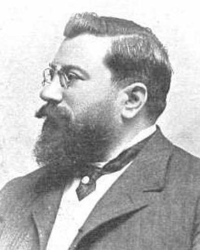

Ideologies / Reactionary
What is Carlism?
Carlism is a political ideology in the Reactionary family. The programme drawn up at the Carlist claimant's court in Venice makes Catholic unity the foundation of Spain and rejects liberal parliamentarism as foreign and corrupt. The king both reigns and governs, but within the law and beside a Cortes that represents estates and professions, not parties. The regions recover their historic charters, the fueros, with their own assemblies and laws. On labour it follows Leo XIII and calls for revived guilds.
God, Fatherland, Fueros, King.
Defined from: Carlos VII and his counsellors, among them Juan Vázquez de Mella, The Loredan Act (Acta de Loredán) (1897)
See how close you are to Carlism Dare a friend to answer as one


Where Carlism stands on 13 axes
Each axis runs from 0 to 100. A score of 50 is the middle. On a classic compass it sits in the Authoritarian Right quadrant.
| Axis | Position | Score | In words |
|---|---|---|---|
| EconomyMarket to Planned | 50 | Balanced | |
| OwnershipPrivate to Collective | 30 | Strongly Private | |
| RightsLiberty to Security | 70 | Strongly Security | |
| GovernmentDemocracy to Autocracy | 80 | Strongly Autocracy | |
| StructureDecentralised to Centralised | 20 | Strongly Decentralised | |
| NationInternationalist to Nationalist | 70 | Strongly Nationalist | |
| ImmigrationMulticulturalist to Assimilationist | 45 | Balanced | |
| ValuesProgressive to Traditional | 100 | Very strongly Traditional | |
| TechnologyAccelerationist to Precautionary | 75 | Strongly Precautionary | |
| EnvironmentIndustrialist to Environmentalist | 50 | Balanced | |
| ReligionSecular to Religious | 100 | Very strongly Religious | |
| MilitaryPacifist to Militarist | 65 | Leans Militarist | |
| TradeFree Trade to Protectionist | 60 | Leans Protectionist |
Ideologies closest to Carlism
- Austrofascism79% alike
- Traditionalist Conservatism78% alike
- Pan Slavism77% alike
- Burkean Conservatism77% alike
- Neo Eurasianism (Fourth Political Theory)77% alike
Its opposite on this map is Fully Automated Luxury Communism, at 23%.
Parties near Carlism
- Anti Revolutionary PartyNetherlands. Our Programme (1879)78% alike
- Centre PartyGermany. The Soest Programme (1870)76% alike
- Pakistan Tehreek e InsafPakistan. Shandaar Pakistan, Shandaar Mustaqbil (2024)73% alike
- Tory PartyUnited Kingdom. The Tamworth Manifesto (1834)73% alike
Common questions
What is Carlism?
Carlism is a political ideology in the Reactionary family. The programme drawn up at the Carlist claimant's court in Venice makes Catholic unity the foundation of Spain and rejects liberal parliamentarism as foreign and corrupt. The king both reigns and governs, but within the law and beside a Cortes that represents estates and professions, not parties. The regions recover their historic charters, the fueros, with their own assemblies and laws. On labour it follows Leo XIII and calls for revived guilds.
What does Carlism believe?
In one line: God, Fatherland, Fueros, King. Its strongest positions are Traditional, Religious, Autocracy. The programme drawn up at the Carlist claimant's court in Venice makes Catholic unity the foundation of Spain and rejects liberal parliamentarism as foreign and corrupt. The king both reigns and governs, but within the law and beside a Cortes that represents estates and professions, not parties. The regions recover their historic charters, the fueros, with their own assemblies and laws. On labour it follows Leo XIII and calls for revived guilds.
Who founded Carlism?
Carlism is defined here from The Loredan Act (Acta de Loredán) (1897) by Carlos VII and his counsellors, among them Juan Vázquez de Mella. The thinker most tied to it is Juan Vázquez de Mella (1861 to 1928).
Is Carlism left wing or right wing?
On a classic two axis compass Carlism falls in the Authoritarian Right quadrant, which means the economic right and the authoritarian side. Left and right hide a lot, though, which is why EthosScales scores it on thirteen separate axes.
How is Carlism different from Austrofascism?
They are close: 79% alike. The biggest gaps are on Structure, where Carlism scores 20 and Austrofascism scores 60, and Immigration, where Carlism scores 45 and Austrofascism scores 80. On each axis, 0 is one end and 100 is the other.
Think this is wrong? Suggest a correction. The scores are editorial estimates.